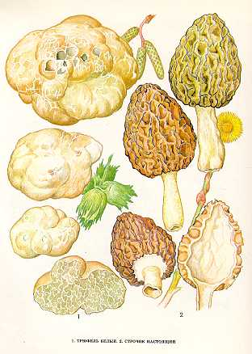

1. ТРЮФЕЛЬ БЕЛЫЙ
Трюфели растут в лиственных, хвойных и смешанных лесах на умеренно влажных, хорошо прогреваемых почвах со слаборазвитым травянистым покровом. Встречаются в осинниках, березняках, под кустами орешника, а также в молодых насаждениях сосны и ели в августе – сентябре.
Плодовое тело имеет форму клубня картофеля.
Гриб крупный, достигает
Ищут трюфели с помощью
дрессированных собак. Трюфели варят, жарят, сушат. Приручение собак к поискам
трюфелей. Для этой цели выбирают молодых щенков-самочек.
Их сначала поят молоком, к которому добавляют отвар или настой трюфелей. Когда
щенки подрастут, делают первые опыты дрессировки в комнате. Деревяшки, натертые
трюфелями, прячут под лоскутками материи и заставляют щенка по запаху искать
их. Потом дрессировку проводят во дворе, огороде и в лесу
2. СМОРЧОК НАСТОЯЩИЙ.
Ранневесенний гриб (появляется
в апреле — мае) в лиственных, хвойных и смешанных лесах на плодородной, перегнойной
почве, богатой известью, часто встречается на пожарищах, песчаных и мшистых местах,
на опушках леса, в междурядьях посадок, вдоль дорог, канав, на вырубках. Растет оди-ночно,
реже группами.
Шляпка 5—6 см высоты, 4—
Ножка 3—7 см длины, 1—2 см толщины, полая, цилиндрическая,
снизу немного расширенная, беловатая, желтоватая или буроватая.
Условно съедобный гриб третьей категории, с высокими вкусовыми качествами.
Употребляется свежим, пригоден для сушки.